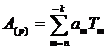
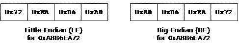
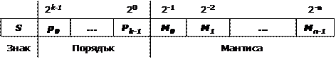
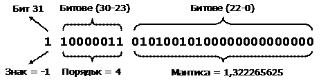
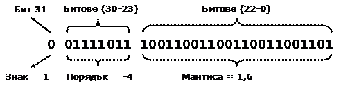

Глава 8. Бройни системи
Автор
Петър Велев
Светлин Наков
В тази тема...
В настоящата тема ще разгледаме начините на работата с различни бройни системи и представянето на числата в тях. Повече внимание ще отделим на представянето на числата в десетична, двоична и шестнадесетична бройна система, тъй като те се използват масово в компютърната техника и в програмирането. Ще обясним и начините за кодиране на числовите данни в компютъра и видовете кодове, а именно: прав код, обратен код, допълнителен код и двоично-десетичен код.
История в няколко реда
Използването на различни бройни системи е започнало още в дълбока древност. Това твърдение се доказва от обстоятелството, че още в Египет са използвани слънчевите часовници, а техните принципи за измерване на времето ползват бройни системи. По-голямата част от историците смятат древноегипетската цивилизация за първата цивилизация, която е разделила деня на по-малки части. Те постигат това, посредством употребата на първите в света слънчеви часовници, които не са нищо друго освен обикновени пръти, забити в земята и ориентирани по дължината и посоката на сянката.
По-късно е изобретен по-съвършен слънчев часовник, който прилича на буквата Т и е градуиран по начин, по който да разделя времето между изгрев и залез слънце на 12 части. Това доказва използването на дванадесетична бройна система в Египет, важността на числото 12 обикновено се свързва и с обстоятелството, че лунните цикли за една година са 12, или с броя на фалангите на пръстите на едната ръка (по три на всеки от четирите пръста, като не се смята палеца).
В днешно време десетичната бройна система е най-разпространената бройна система. Може би това се дължи на улесненията, които тя предоставя на човека, когато той брои с помощта на своите пръсти.
Древните цивилизации са разделили денонощието на по-малки части, като за целта са използвали различни бройни системи, дванадесетични и шестдесетични съответно с основи – 12 и 60. Гръцки астрономи като Хипарх са използвали астрономични подходи, които преди това са били използвани и от вавилонците в Месопотамия. Вавилонците извършвали астрономичните изчисления в шестдесетична система, която били наследили от шумерите, а те от своя страна да я развили около 2000 г. пр. н. е. Не е известно от какви съображения е избрано точно числото 60 за основа на бройната система, но е важно да се знае че, тази система е много подходяща за представяне на дроби, тъй като числото 60 е най-малкото число, което се дели без остатък съответно на 1, 2, 3, 4, 5, 6, 10, 12, 15, 20 и 30.
Някои приложения на шестдесетичната бройна система
Днес шестдесетичната система все още се използва за измерване на ъгли, географски координати и време. Те все още намират приложение при часовниковия циферблат и сферата на глобуса. Шестдесетичната бройна система е използвана и от Ератостен за разделянето на окръжността на 60 части с цел създаване на една ранна система от географски ширини, съставена от хоризонтални линии, минаващи през известни в миналото места от земята. Един век след Ератостен Хипарх нормирал тези линии, като за целта ги направил успоредни и съобразени с геометрията на Земята. Той въвежда система от линии на географската дължина, в които включват 360 градуса и съответно минават от север до юг и от полюс до полюс. В книгата "Алмагест" (150 г. от н. е.) Клавдий Птолемей доразвива разработките на Хипарх чрез допълнително разделяне на 360-те градуса на географската ширина и дължина на други по-малки части. Той разделил всеки един от градусите на 60 равни части, като всяка една от тези части в последствие била разделена на нови 60 по-малки части, които също били равни. Така получените при деленето части, били наречени partes minutae primae, или "първа минута" и съответно partes minutae secundae, или "втора минута". Тези части се ползват и днес и се наричат съответно "минути" и "секунди".
Кратко обобщение
Направихме кратка историческа разходка през хилядолетията, от която научаваме, че бройните системи са били създадени, използвани и развивани още по времето на шумерите. От изложените факти става ясно защо денонощието съдържа (само) 24 часа, часът съдържа 60 минути, а минутата 60 секунди. Това се дължи на факта, че древните египтяни са разделили по такъв начин денонощието, като са въвели употребата на дванадесетична бройна система. Разделянето на часовете и минутите на 60 равни части, е следствие от работата на древногръцките астрономи, които извършват изчисленията в шестдесетична бройна система, която е създадена от шумерите и използвана от вавилонците.
Бройни системи
До момента разгледахме историята на бройните системи. Нека сега разгледаме какво представляват те и каква е тяхната роля в изчислителната техника.
Какво представляват бройните системи?
Бройните системи са начин за представяне (записване) на числата, чрез краен набор от графични знаци наречени цифри. Към тях трябва да се добавят и правила за представяне на числата. Символите, които се използват при представянето на числата в дадена бройна система, могат да се възприемат като нейна азбука.
По време на различните етапи от развитието на човечеството, различни бройни системи са придобивали известност. Трябва да се отбележи, че днес най-широко разпространение е получила арабската бройна система. Тя използва цифрите 0, 1, 2, 3, 4, 5, 6, 7, 8 и 9, като своя азбука. (Интересен е фактът, че изписването на арабските цифри в днешно време се различава от представените по-горе десет цифри, но въпреки това, те пак се отнасят за същата бройна система т.е. десетичната).
Освен азбука, всяка бройна система има и основа. Основата е число, равно на броя различни цифри, използвани от системата за записване на числата в нея. Например арабската бройна система е десетична, защото има 10 цифри. За основа може да се избере произволно число, чиято абсолютна стойност трябва да бъде различна от 0 и 1. Тя може да бъде и реално или комплексно число със знак.
В практическо отношение, възниква въпросът: коя е най-добрата бройна система, която трябва да използваме? За да си отговорим на този въпрос, трябва да решим, как ще се представи по оптимален начин едно число като записване (т.е. брой на цифрите в числото) и брой на цифрите, които използва съответната бройна система т.е. нейната основа. По математически път, може да се докаже, че най-доброто съотношение между дължината на записа и броя на използваните цифри, се постига при основа на бройната система Неперовото число (e = 2,718281828), което е основата на естествените логаритми. Да се работи в система с тази основа, е изключително неудобно, защото това число не може да се представи като отношение на две цели числа. Това ни дава основание да заключим, че оптималната основа на бройната система е 2 или 3. Въпреки, че 3 е по-близо до Неперовото число, то е неподходящо за техническа реализация. Поради тази причина, двоичната бройна система, е единствената подходяща за практическа употреба и тя се използва в съвременните електронноизчислителни машини.
Позиционни бройни системи
Бройните системи се наричат позиционни, тогава, когато мястото (позицията) на цифрите има значение за стойността на числото. Това означава, че стойността на цифрата в числото не е строго определена и зависи от това на коя позиция се намира съответната цифра в дадено число. Например в числото 351 цифрата 1 има стойност 1, докато при числото 1024 тя има стойност 1000. Трябва да се отбележи, че основите на бройните системи се прилагат само при позиционните бройни системи. В позиционна бройна система числото A(p) = (a(n)a(n-1)...a(0),a(-1)a(-2)...a(-k)) може де се представи във вида:

В тази сума Tm има значение на теглови коефициент за m-тия разряд на числото. В повечето случаи обикновено Tm = Pm, което означава, че
Образувано по горната сума, числото A(p) е съставено съответно от цяла си част (a(n)a(n-1)...a(0)) и от дробна си част (a(-1)a(-2)...a(-k)), където всяко a принадлежи на множеството от цели числа M={0, 1, 2, ..., p-1}. Лесно се вижда, че, при позиционните бройни системи стойността на всеки разряд е по-голяма от стойността на предходния разряд (съседния разряд отдясно, който е по-младши) с толкова пъти, колкото е основата на бройната система. Това обстоятелство, налага при събиране да прибавяме единица към левия (по-старшия) разряд, ако трябва да представим цифра в текущия разряд, която е по-голяма от основата. Системите с основи 2, 8, 10 и 16 са получили по-широко разпространение в изчислителната техника, и в следващата таблица е показано съответното представяне на числата от 0 до 15 в тях:
|
Двоична |
Осмична |
Десетична |
Шестнадесетична |
|
0000 |
0 |
0 |
0 |
|
0001 |
1 |
1 |
1 |
|
0010 |
2 |
2 |
2 |
|
0011 |
3 |
3 |
3 |
|
0100 |
4 |
4 |
4 |
|
0101 |
5 |
5 |
5 |
|
0110 |
6 |
6 |
6 |
|
0111 |
7 |
7 |
7 |
|
1000 |
10 |
8 |
8 |
|
1001 |
11 |
9 |
9 |
|
1010 |
12 |
10 |
A |
|
1011 |
13 |
11 |
B |
|
1100 |
14 |
12 |
C |
|
1101 |
15 |
13 |
D |
|
1110 |
16 |
14 |
E |
|
1111 |
17 |
15 |
F |
Непозиционни бройни системи
Освен позиционни, съществуват и непозиционни бройни системи, при които стойността на всяка цифра е постоянна и не зависи по никакъв начин от нейното място в числото. Като примери за такива бройни системи могат да се посочат съответно римската, гръцката, милетската и др. Като основен недостатък, на непозиционните бройни системи трябва да се посочи това, че чрез тях големите числа се представят неефективно. Заради този си недостатък те са получили по-ограничена употреба. Често това би могло да бъде източник на грешка при определяне на стойността на числата. Съвсем накратко ще разгледаме римската и гръцката бройни системи.
Римска бройна система
Римската бройна система използва следните символи за представяне на числата:
|
Римска цифра |
Десетична равностойност |
|
I |
1 |
|
V |
5 |
|
X |
10 |
|
L |
50 |
|
C |
100 |
|
D |
500 |
|
М |
1000 |
Както вече споменахме, в тази бройна система позицията на цифрата не е от значение за стойността на числото, но за нейното определяне се прилагат следните правила:
1. Ако две последователно записани римски цифри, са записани така, че стойността на първата е по-голяма или равна на стойността на втората, то техните стойности се събират. Пример:
Числото III=3, а числото MMD=2500.
2. Ако две последователно записани римски цифри, са в намаляващ ред на стойностите им, то техните стойности се изваждат. Пример:
Числото IX=9, числото XML=1040, а числото MXXIV=1024.
Гръцка бройна система
Гръцката бройна система, е десетична система, при която се извършва групиране по петици. Тя използва следните цифри:
|
Гръцка цифра |
Десетична равностойност |
|
Ι |
1 |
|
Π |
5 |
|
Δ |
10 |
|
Η |
100 |
|
Χ |
1 000 |
|
Μ |
10 000 |
Следват примери на числа от тази система:
ΓΔ = 50, ΓH = 500, ΓX = 5000, ΓM = 50 000.
Двоичната бройна система – основа на електронноизчислителната техника
Двоичната бройна система, е системата, която се използва за представяне и обработка на числата в съвременните електронноизчислителни машини. Главната причина, поради която тя се е наложила толкова широко, се обяснява с обстоятелството, че устройства с две устойчиви състояния се реализират просто, а разходите за производство на двоични аритметични устройства са много ниски.
Двоичните цифри 0 и 1 лесно се представят в изчислителната техника като "има ток" / "няма ток" или като "+5V" и "-5V".
Наред със своите предимства, двоичната система за представяне на числата в компютъра си има и недостатъци. Един от големите практически недостатъци, е, че числата, представени с помощта на тази система са много дълги, т. е. имат голям брой разреди (битове). Това я прави неудобна за непосредствена употреба от човека. За избягване на това неудобство, в практиката се ползват бройни системи с по-големи основи.
Десетични числа
Числата представени в десетична бройна система, се задават в първичен вид т.е. вид удобен за възприемане от човека. Тази бройна система има за основа числото 10. Числата записани в нея са подредени по степените на числото 10. Младшият разряд (първият отдясно на ляво) на десетичните числа се използва за представяне на единиците (100=1), следващият за десетиците (101=10), следващият за стотиците (102=100) и т.н. Казано с други думи, всеки следващ разряд е десет пъти по-голям от предшестващия го разряд. Сумата от отделните разряди определя стойността на числото. За пример ще вземем числото 95031, което в десетична бройна система се представя като:
95031 = (9x104) + (5x103) + (0x102) + (3x101) + (1x100)
Представено в този вид, числото 95031 е записано по естествен за човека начин, защото принципите на десетичната система са възприети като фундаментални за хората. Много е важно да се отбележи, че тези подходи важат и за останалите бройни системи. Те имат същата логическа постановка, но тя е приложена за бройна система с друга основа. Последното твърдение, се отнася включително и за двоичната и шестнайсетината бройни системи, които ще разгледаме в детайли след малко.
Двоични числа
Числата представени в тази бройна система, се задават във вторичен вид т.е. вид удобен за възприемане от изчислителната машина. Този вид е малко по-трудно разбираем за човека. За представянето на двоичните числа, се използва двоичната бройна система, която има за основа числото 2. Числата записани в нея са подредени по степените на двойката. За тяхното представяне, се използват само цифрите 0 и 1.
Прието е, когато едно число се записва в бройна система, различна от десетичната, във вид на индекс в долната му част да се отразява, коя бройна система е използвана за представянето му. Например със записа 1110(2) означаваме число в двоична бройна система. Ако не бъде указана изрично, бройната система се приема, че е десетична. Числото се произнася, като се прочетат последователно неговите цифри, започвайки от ляво на дясно (т.е. прочитаме го от старшия към младия разряд "бит").
Както и при десетичните числа, гледано от дясно наляво, всяко двоично число изразява степените на числото 2 в съответната последователност. На младшата позиция в двоично число съответства нулевата степен (20=1), на втората позиция съответства първа степен (21=2), на третата позиция съответства втора степен (22=4) и т.н. Ако числото е 8-битово, степените достигат до седма (27=128). Ако числото е 16-битово, степените достигат до петнадесета (215=32768). Чрез 8 двоични цифри (0 или 1) могат да се представят общо 256 числа, защото 28=256. Чрез 16 двоични цифри могат да се представят общо 65536 числа, защото 216=65536.
Нека даден един пример за числа в двоична бройна система. Да вземем десетичното число 148. То е съставено от три цифри: 1, 4 и 8, и съответства на следното двоично число:
10010100(2)
148 = (1x27) + (1x24) + (1x22)
Пълното представяне на това число е изобразено в следващата таблица:
|
Число |
1 |
0 |
0 |
1 |
0 |
1 |
0 |
0 |
|
Степен |
27 |
26 |
25 |
24 |
23 |
22 |
21 |
20 |
|
Стойност |
1x27=128 |
0x26=0 |
0x25=0 |
1x24=16 |
0x23=0 |
1x22=4 |
0x21=0 |
0x20=0 |
Последователността от осем на брой нули и единици представлява един байт, т.е. това е едно обикновено осем-разредно двоично число. Чрез един байт могат да се запишат всички числа от 0 до 255 включително. Много често това е не достатъчно и затова се използват по няколко последователни байта за представянето на едно число. Два байта образуват т.н. "машинна дума" (word), която отговаря на 16 бита (при 16-разредните изчислителни машини). Освен нея, в изчислителните машини се използва и т.н. "двойна дума" (double word) или (dword), съответстваща на 32 бита.
|
|
Ако едно двоично число завършва на 0, то е четно, а ако завършва на 1, то е нечетно. |
Преминаване от двоична в десетична бройна система
При преминаване от двоична в десетична бройна система, се извършва преобразуване на двоичното число в десетично. Всяко число може да се преобразува от една бройна система в друга, като за целта се извършат последователност от действия, които са възможни и в двете бройни системи. Както вече споменахме, числата записани в двоична бройна система се състоят от двоични цифри, които са подредени по степените на двойката. Нека да вземем за пример числото 11001(2). Преобразуването му в десетично се извършва чрез пресмятането на следната сума:
11001(2) = 1x24 + 1x23 + 0x22 + 0x21 + 1x20 =
= 16(10) + 8(10) + 1(10) = 25(10)
От това следва, че 11001(2) = 25(10)
С други думи, всяка една двоична цифра се умножава по 2 на степен, позицията, на която се намира (в двоичното число). Накрая се извършва събиране, на числата, получени за всяка от двоичните цифри, за да се получи десетичната равностойност на двоичното число.
Съществува и още един начин за преобразуване, който е известен като схема на Хорнер. При тази схема се извършва умножение на най-лявата цифра по две и събиране със съседната й вдясно. Този резултат се умножава по две и се прибавя следващата съседна цифра от числото (цифрата вдясно). Това продължава до изчерпване на всички цифри в числото, като последната цифра от числото се добавя без умножаване. Ето един пример:
1001(2) = ((1.2+0).2+0).2+1 = 2.2.2+1 = 9
Преминаване от десетична към двоична бройна система
При преминаване от десетична в двоична бройна система, се извършва преобразуване на десетичното число в двоично. За целите на преобразуването се извършва делене на две с остатък. Така се получават частно и остатък, който се отделя.
Отново ще вземем за пример числото 148. То се дели целочислено на основата, към която ще преобразуваме (в примера тя е 2). След това, от остатъците получени при деленето (те са само нули и единици), се записва преобразуваното число. Деленето продължава, докато получим частно нула. Ето пример:
148:2=74 имаме остатък 0;
74:2=37 имаме остатък 0;
37:2=18 имаме остатък 1;
18:2=9 имаме остатък 0;
9:2=4 имаме остатък 1;
4:2=2 имаме остатък 0;
2:2=1 имаме остатък 0;
1:2=0 имаме остатък 1;
След като вече семе извършили деленето, записваме стойностите на остатъците в ред, обратен на тяхното получаване, както следва:
10010100
т.е. 148(10) = 10010100 (2)
Действия с двоични числа
При двоичните числа за един двоичен разряд са в сила аритметичните правила за събиране, изваждане и умножение.
0+0=0 0-0=0 0.0=0
1+0=1 1-0=1 1.0=0
0+1=1 1-1=0 0.1=0
1+1=10 10-1=1 1.1=1
С двоичните числа могат да се извършват и логически действия, като логическо умножение (конюнкция), логическо събиране (дизюнкция) и сума по модул две (изключващо или).
Трябва да се отбележи, че при извършване на аритметични действия над многоразредни числа трябва да се отчита връзката между отделните разреди чрез пренос или заем, когато извършваме съответно събиране или изваждане.
Шестнайсетични числа
При тези числа имаме за основа на бройната система числото 16, което налага да бъдат използвани 16 знака (цифри) за представянето на всички възможни стойности от 0 до 15 включително. Както вече беше показано в една от таблиците в предходните точки, за представянето на шестнайсетичните числа се използват числата от 0 до 9 и латинските букви от A до F. Всяка от тях има съответната стойност:
A=10, B=11, C=12, D=13, E=14, F=15
Като примери за шестнайсетични числа могат да бъдат посочени съответно, D2, 1F2 F1, D1E и др.
Преминаването към десетична система става като се умножи по 160 стойността на най-дясната цифра, по 161 следващата вляво, по 162 следващата вляво и т.н. и накрая се съберат. Например:
D1E(16) = Е*160 + 1*161 + D*162 = 14*1 + 1*16 + 13*256 = 3358(10).
Преминаването от десетична към шестнайсетична бройна система става като се дели десетичното число на 16 и се вземат остатъчите в обратен ред. Например:
3358 / 16 = 209 + остатък 14 (Е)
209 / 16 = 13 + остатък 1 (1)
13 / 16 = 0 + остатък 13 (D)
Взимаме остатъците в обратен ред и получаваме числото D1E(16).
Бързо преминаване от двоични към шестнайсетични числа
Бързото преобразуване, от двоични в шестнайсетични числа се извършва бързо и лесно, чрез разделяне на двоичното число на групи от по четири бита (разделяне на полубайтове). Ако броят на цифрите в числото не е кратен на четири, то се добавят водещи нули в старшите разреди. След разделянето и евентуалното добавяне на нули, се заместват всички получени групи със съответстващите им цифри. Ето един пример:
Нека да ни е дадено следното число: 1110011110(2).
1. Разделяме го на полубайтове и добавяме водещи нули
Пример: 0011 1001 1110.
2. Заместваме всеки полубайт със съответната шестнайсетична цифра и така получаваме 39E(16).
Следователно 1110011110 (2) = 39E(16).
Представяне на числата
За съхраняване на данните в оперативната памет на електронноизчислителните машини, се използва двоичен код. В зависимост от това какви данни съхраняваме (символи, цели или реални числа с цяла и дробна част) информацията се представя по различен начин. Този начин се определя от типа на данните.
Дори и програмистът на език от високо ниво трябва да знае, какъв вид имат данните разположени в оперативната памет на машината. Това се отнася, и за случаите, когато данните се намират на външен носител, защото при обработката им те се разполагат в оперативната памет.
В тази глава са разгледани начините за представяне и обработка на различни типове данни. Най-общо те се основават на понятията бит, байт и машинна дума.
Бит е една двоична единица от информация, със стойност 0 или 1.
Информацията в паметта се групира в последователности от 8 бита, които образуват един байт.
За да бъдат обработени от аритметичното устройство, данните се представят в паметта от определен брой байтове (2, 4 или 8), които образуват машинната дума. Това са концепции, които всеки програмист трябва задължително да знае и разбира.
Представяне на цели числа в паметта
Едно от нещата, на които до сега на обърнахме внимание е знакът на числата. Представянето на цели числата в паметта на компютъра, може да се извърши по два начина: със знак или без знак. Когато числата се представят със знак се въвежда знаков разред. Той е най-старшият разред и има стойност 1 за отрицателните числа и 0 за положителните. Останалите разреди са информационни и отразяват (съдържат) стойността числото. В случая на числа без знак всички битове се използват за записване на стойността на числото.
Цели числа без знак
За целите числа без знак се заделят по 1, 2, 4 или 8 байта от паметта. В зависимост, от броя на байтовете използвани при представянето на едно число, се образуват обхвати на представяне с различна големина. Посредством n на брой бита могат да се представят цели числа без знак в обхвата [0, 2n-1]. Следващата таблица, показва обхватa от стойности на целите числа без знак:
|
Брой байтове за представяне на числото в паметта |
Обхват |
|
|
Запис чрез порядък |
Обикновен запис |
|
|
1 |
0 ÷ 28-1 |
0 ÷ 255 |
|
2 |
0 ÷ 216-1 |
0 ÷ 65 535 |
|
4 |
0 ÷ 232-1 |
0 ÷ 4 294 967 295 |
|
8 |
0 ÷ 264-1 |
0 ÷ 9 223 372 036 854 775 807 |
Ще покажем пример при еднобайтово и двубайтово представяне на числото 158, което се записва в двоичен вид като 10011110 (2):
1. Представяне с 1 байт:
|
1 |
0 |
0 |
1 |
1 |
1 |
1 |
0 |
2. Представяне с 2 байта:
|
0 |
0 |
0 |
0 |
0 |
0 |
0 |
0 |
1 |
0 |
0 |
1 |
1 |
1 |
1 |
0 |
Представяне на отрицателни числа
За отрицателните числа се заделят по един, два или четири байта от паметта на компютъра, като най-старшият разред има значение на знаков и ни носи информация за знака на числото. Както вече споменахме, когато знаковият бит има стойност 1 числото е отрицателно, а в противен случай – положително. Следващата таблица, показва обхвата от стойности на целите числа със знак:
|
Брой байтове за представяне на числото в паметта |
Обхват |
|
|
Запис чрез порядък |
Обикновен запис |
|
|
1 |
-27 ÷ 27-1 |
-128 ÷ 127 |
|
2 |
-215 ÷ 215-1 |
-32 768 ÷ 32 767 |
|
4 |
-231 ÷ 231-1 |
-2 147 483 648 ÷ 2 147 483 647 |
|
8 |
-263 ÷ 263-1 |
-9 223 372 036 854 775 808 ÷ 9 223 372 036 854 775 807 |
За кодирането на отрицателните числа, се използват прав, обратен и допълнителен код. И при трите представяния целите числа със знак са в границите: [-2n-1, 2n-1-1]. Положителните числа винаги се представят по един и същи начин и за тях правият, обратният и допълнителният код съвпадат.
Прав код: Правият код е най-простото представяне на числото. Старшият бит е знаков, а в оставащите битове е записана абсолютната стойност на числото. Ето няколко примера:
Числото 3 в прав код се представя в осембитово число като 00000011.
Числото -3 в прав код се представя в осембитово число като 10000011.
Обратен код: Получава се от правия код на числото, чрез инвертиране (заместване на всички нули с единици и единици с нули). Този код не е никак удобен за извършването на аритметичните действия събиране и изваждане, защото се изпълнява по различен начин, когато се налага изваждане на числа. Освен това се налага знаковите битове да се обработват отделно от информационните. Този недостатък се избягва с употребата на допълнителен код, при който вместо изваждане се извършва събиране с отрицателно число. Последното е представено чрез неговото допълнение т.е. разликата между 2n и самото число. Пример:
Числото -127 в прав код се представя като 1 1111111, а в обратен код като 1 0000000.
Числото 3 в прав код се представя като 0 0000011, а в обратен код има вида 0 1111100.
Допълнителен код: Допълнителният код е число в обратен код, към което е прибавена (чрез събиране) единица. Пример:
Числото -127 представено в допълнителен код има вида 1 0000001.
Двоично-десетичен код: Известен е още като BCD код (Binary Coded Decimal). При този код в един байт се записват по две десетични цифри. Това се постига, като чрез всеки полубайт се кодира една десетична цифра. Числа представени чрез този код могат да се пакетират т.е. да се представят в пакетиран формат. Ако представим една десетична цифра в един байт се получава непакетиран формат.
Съвременните микропроцесори използват един или няколко от разгледаните кодове за представяне на отрицателните числа, като най-разпространеният начин е представянето в допълнителен код.
Типовете int и long в Java
Както знаем, в Java има четири целочислени типа данни със знак и те са byte, short, int, и long. За представянето на променливи от тези типове се използват двоични числа в допълнителен код. В зависимост от броя байтове, които се заделят в паметта за тези типове, се определя и съответният диапазон от стойности, които те могат да заемат.
Съществено ограничение на езика Java е, че не поддържа цели числа без знак. Най-широко използваният целочислен тип е int. Той се представя като 32-битово число в допълнителен код и приема стойности в интервала [-231, 231-1]. Променливите от този тип най-често се използват за управление на цикли, индексиране на масиви и други целочислени изчисления. В следващата таблица е даден пример за декларация на променливи от тип int:
|
int decimalValue = 25; int octoInt = 0235; |
Типът long е най-големият целочислен тип със знак в Java. Той има размерност 64 бита (8 байта). При присвояване на стойности на променливите от тип long се използват латинските букви "l" или "L", които се поставят в края на целочисления литерал. Поставен на това място, този модификатор означава, че литералът има стойност от тип long. Това се прави, защото по подразбиране целочислените литерали са от тип int. В следващия пример декларираме и присвояваме 64-битови цели числа на променливи от тип long:
|
long longValue = 9223372036854775807L; long newLongValue = 932145699054323689l; |
Важно условие е да се внимава да не бъде надхвърлен обхватът на представимите числа и за двата типа.
Представянията Big-Endian и Little-Endian
При цели числа, които се записват в повече от един байт, има два варианта за наредба на байтовете в паметта:
- Little-Endian (LE) – байтовете се подреждат от ляво надясно от най-младшия към най-старшия. Това представяне се използва при Intel x86, Intel x64 микропроцесорните архитектури.
- Big-Endian (BE) – байтовете се подреждат от ляво надясно от най-старшия към най-младшия. Това представяне се използва при PowerPC, SPARC и ARM микропроцесорните архитектури.
Ето един пример: числото A8B6EA72(16) се представя в двете наредби на байтовете по следния начин:

Java използва Big-Endian представянето, което е типично за хардуера на Sun Microsystems, и това трябва да се съобразява при обмяната на числови данни с други системи, които не са Java базирани.
Представяне на реални числа с плаваща запетая
Реалните числа са съставени от цяла и дробна част. В компютрите, те се представят като числа с плаваща запетая. Всъщност това представяне идва от възприетия от водещите производители на микропроцесори Standard for Floating-Point Arithmetic (IEEE 754). Повечето хардуерни платформи и езици за програмиране позволят или изискват изчисленията да се извършват съгласно изискванията на този стандарт. Стандартът определя:
- Аритметични формати: набор от двоични и десетични данни с плаваща запетая, които са съставени от краен брой цифри
- Формати за обмен: кодировки (битови низове), които могат да бъдат използвани за обмен на данни в една ефективна и компактна форма
- Алгоритми за закръгляване: методи, които се използват за закръгляване на числата по време на изчисления
- Операции: аритметика и други операции на аритметичните формати
- Изключения: представляват сигнали за извънредни случаи като деление на нула, препълване и др.
Съгласно IEEE-754 стандарта произволно реално число R може да бъде представено във вида:
R = M * qp
където M e мантисата на числото, а p е порядъкът му (експонента), и съответно q е основа на бройната система, в която е представено числото. Мантисата трябва да бъде положителна или отрицателна правилна дроб т.е. |M|<1, а порядъкът – положително или отрицателно цяло число.
При посочения начин на представяне на числата, всяко число във формат с плаваща запетая, ще има следния обобщен вид ±0,M*q±p.
В частност, когато представяме числата във формат с плаваща запетая чрез двоична бройна система, ще имаме R = M * 2p. При това представяне на реалните числа в паметта на компютъра, след промяна на порядъка се стига и до изместване "плаване" на десетичната запетая в мантисата. Форматът на представянето с плаваща запетая, има полулогаритмична форма. Той е изобразен нагледно на следващата фигура:

Представяне на числа с плаваща запетая – пример
Нека дадем един пример за представяне на число с плаваща запетая в паметта. Искаме да запишем числото -21,15625 в 32-битов (single precision) floating-point формат по стандарта IEEE-754. При този формат се използват 23 бита за мантиса, 8 бита за експонента и 1 бит за знак на числото. Представянето на числото е следното:

Знакът на числото е отрицателен, т. е. мантисата има отрицателен знак:
S = -1
Порядъкът (експонентата) има стойност 4 (записана в допълнителен код):
p = (20 + 21 + 27) - 127 = (1+2+128) – 127 = 4
За преминаване към истинската стойност изваждаме 127 от стойността на допълнителния код, защото работим с 8 бита (127 = 28-1).
Мантисата има следната стойност (без да взимаме предвид знака):
М = 1 + 2-2 + 2-4 + 2-7 + 2-9 =
= 1 + 0,25 + 0,0625 + 0,0078125 + 0,001953125 =
= 1,322265625
Забелязахте ли, че добавихме единица, която липсва в двоичния запис на мантисата? Това е така, защото мантисата винаги е нормализирана и започва с единица, която се подразбира.
Стойността на числото се изчислява по формулата R = M * 2p, която в нашия пример добива вида:
R = -1,3222656 * 24 = -1,322265625 * 16 = -21,1562496 ≈ -21,15625
Нормализация на мантисата
За по-пълното използване на разрядната решетка мантисата трябва да съдържа единица в старшия си разред. Всяка мантиса удовлетворяваща това условие са нарича нормализирана. При IEEE-754 стандарта единицата в цялата част на мантисата се подразбира, т.е. мантисата е винаги число между 1 и 2.
Ако по време на изчисленията се достигне до резултат, който не удовлетворява това условие, то имаме нарушение на нормализацията. Това изисква, преди да се пристъпи към по-нататъшна обработка на числото то да бъде нормализирано, като за целта се измества запетаята в мантисата и след това се извършва съответна промяна на порядъка.
Типовете float и double в Java
В Java разполагаме с два типа данни за представяне на числата с плаваща запетая. Типът float е 32-битово реално число с плаваща запетая, за което е прието да се казва, че има единична точност (single precision floating-point number). Типът double е 64-битово реално число с плаваща запетая, за което е прието да се казва, че има двойна точност (double precision floating-point number). Тези реални типове данни и аритметичните операции върху тях съответстват на спецификацията, определена от стандарта IEEE 754-1985.
При тип float имаме мантиса, която съхранява 8-9 значещи цифри, докато при тип double тя съхранява 16-17 значещи цифри. Останалите битове се използват за задаването на знаците на мантисата и стойността на порядъка. Типът double освен с по-голям брой значещи цифри разполага и с по-голям порядък т.е. обхват на приеманите стойности. Ето един пример за декларация на променливи от тип float и тип double:
|
float total = 5.0f; float result = 5.0F; double sum = 10.0; double div = 35.4/3.0; |
Важно е да се знае, че в Java по подразбиране числата с плаваща запетая са от тип double.
Много от математическите операции могат да дадат резултати, които нямат конкретна числена стойност като например стойността "+/- безкрайност" или стойността NaN (което означава “Not a Number"), които не представляват числа. Ето един пример:
|
double d = 0; System.out.println(d); System.out.println(1/d); System.out.println(-1/d); System.out.println(d/d); |
Ако го изпълним, ще получим следния резултат:
|
0.0 Infinity -Infinity NaN |
Ако изпълним горния код с тип int вместо double, ще получим java.lang. ArithmeticException, защото целочисленото деление на 0 е непозволена операция.
Стриктен режим на изчисленията с плаваща запетая
Изчисленията с плаваща запетая могат да се изпълняват и в стриктен режим. Стриктната аритметика при числата с плаваща запетая следва строги правила за операциите, които гарантират, че ще получим един и същ резултат от изчисленията при изпълнение на програмата на различни версии на виртуалната машина.
Ако се налага да гарантирате побитова еднаквост на резултата във всяка реализация на виртуалната машина, трябва да ползвате модификатора strictfp. Той може да се приложи към клас, интерфейс или метод. Повече информация относно този въпрос, може да се намери в "The Java Language Specification": http://java.sun.com/docs/books/jls/.
Точност на числата с плаваща запетая
Точността на резултатите от изчисленията при работа с числа с плаваща запетая зависят от следните параметри:
1. Точността на представяне на числата.
2. Точността на използваните числени методи.
3. Стойностите на грешките, получени при закръгляване и др.
При числата, представени посредством плаваща запетая, стойностите на абсолютната и относителната грешка се определят както следва:
Абсолютна грешка:
Относителна грешка:
Поради това, че числата се представят с някаква точност, при изчисление и резултатите имат съответната точност. Нека като пример да разгледаме следния програмен фрагмент:
|
double sum = 0.0; for(int i=1; i<=10; i++) { sum += 0.1; } System.out.println(sum); |
По време на неговото изпълнение, в цикъл добавяме стойността 1/10 в променливата sum. Очаква се, че при изпълнението на тази програма ще получим резултат 1.0, но в действителност програмата ще изведе стойност, много близка до вярната, но все пак различна:
|
0.9999999999999999 |
Причината за това е, че числото 0.1 няма точно представяне в типа double и се представя със закръгляне. Нека заменим double с float:
|
float sum = 0.0f; for(int i=1; i<=10; i++) { sum += 0.1f; } System.out.println(sum); |
Ако изпълним горния код ще получим съвсем друга сума:
|
1.0000001 |
Причината за това отново е закръглянето, което е извършено този път нагоре, а не надолу, както в предходния пример.
Ако направим разследване, ще се убедим, че числото 0.1 се представя в типа float по следния начин:

Всичко изглежда коректно с изключение на мантисата, която има стойност, малко по-голяма от 1.6, а не точно 1.6, защото това число не може да се представи като сума от степени на 2. Грешката настъпва не при събирането, а още преди това – при записването на 0.1 в типа float.
Числа с фиксирана запетая
В някои езици за програмиране съществуват и числа с фиксирана запетая, например типът decimal в C#, типът money в SQL Server и типът number(10,2) в Oracle. В Java за съжаление няма такъв примитивен тип.
Ако се нуждаем от точни изчисления (например за счетоводни или финансови цели), можем да ползваме класа BigDecimal, който не губи точност при пресмятанията, но за сметка на това работи чувствително по-бавно от float и double. Ето как изглежда в нов вариант нашата програма, която правеше грешки при сумиране на числа:
|
import java.math.BigDecimal;
public class Precision { public static void main(String[] args) { double sum = 0.0d; BigDecimal bdValue = new BigDecimal("0.1"); BigDecimal bdSum = new BigDecimal("0.0"); for(int i=1; i<=10; i++) { sum += 0.1d; bdSum = bdSum.add(bdValue); } System.out.println("Double sum is: " + sum); System.out.println("BigDecimal sum is: " + bdSum); } } |
По време на нейното изпълнение, отново добавяме в цикъл стойността една десета в променливата sum от тип double и обектната променливата от тип BigDecimal. След изпълнението на програмата ще получим:
|
Double sum is: 0.9999999999999999 BigDecimal sum is: 1.0 |
Примерът ни доказва, че BigDecimal не прави грешка при събирането на 0.1 десет пъти, за разлика от тип double.
Упражнения
1. Превърнете числата 151, 35, 43, 251 и -0,41 в двоична бройна система.
2. Превърнете числото 1111010110011110(2) в шестнадесетична и десетична бройна система.
3. Превърнете шестнайсетичните числа 2A3E, FA, FFFF, 5A0E9 в двоична и десетична бройна система.
4. Да се напише програма, която преобразува десетично число в двоично.
5. Да се напише програма, която преобразува двоично число в десетично.
6. Да се напише програма, която преобразува десетично число в шестнадесетично.
7. Да се напише програма, която преобразува шестнадесетично число в десетично.
8. Да се напише програма, която преобразува шестнадесетично число в двоично.
9. Да се напише програма, която преобразува двоично число в шестнадесетично.
10. Да се напише програма, която преобразува двоично число в десетично по схемата на Хорнер.
11. Да се напише програма, която преобразува римските числа в арабски.
12. Да се напише програма, която преобразува арабските числа в римски.
13. Да се напише програма, която определя (отпечатва) стойността на мантисата, знака на мантисата и стойността на експонентата за числа от тип float и double.
Решения и упътвания
1. Използвайте методите за превръщане от една бройна система в друга. Можете да сверите резултатите си с калкулатора на Windows, който поддържа работа с бройни системи след превключване в режим "Scientific".
2. Погледнете упътването за предходната задача.
3. Погледнете упътването за предходната задача.
4. Правилото е "делим на 2 и долепяме остатъците в обратен ред". За делене с остатък използваме оператора %.
5. Започнете от сума 0. Умножете най-десния бит с 1 и го прибавете към сумата. Следващия бит вляво умножете по 2 и добавете към сумата. Следващия бит отляво умножете по 4 и добавете към сумата и т.н.
6. Правилото е "делим на основата на системата (16) и долепяме остатъците в обратен ред". Трябва да си напишем метод за отпечатване на шестнайсетична цифра по дадена стойност между 0 и 15.
7. Започнете от сума 0. Умножете най-дясната цифра с 1 и я прибавете към сумата. Следващата цифра вляво умножете по 16 и я добавете към сумата. Следващата цифра вляво умножете по 16*16 и я добавете към сумата и т.н.
8. Ползвайте бързия начин за преминаване между шестнайсетична и двоична бройна система (всяка шестнайсетична цифра съответства на 4 двоични бита).
9. Ползвайте бързия начин за преминаване между двоична и шестнайсетична бройна система (всяка шестнайсетична цифра съответства на 4 двоични бита).
10. Приложете директно схемата на Хорнер.
11. Сканирайте цифрите на римското число отляво надясно и ги добавяйте към сума, която първоначално е инициализирана с 0. При обработката на всяка римска цифра я взимайте с положителен или отрицателен знак в зависимост от следващата цифра (дали има по-малка или по-голяма десетична стойност).
12. Разгледайте съответствията на числата от 1 до 9 с тяхното римско представяне с цифрите "I", "V" и "X":
1 -> I
2 -> II
3 -> III
4 -> IV
5 -> V
6 -> VI
7 -> VII
8 -> VIII
9 -> IX
Имаме абсолютно аналогични съответствия на числата 10, 20, ..., 90 с тяхното представяне с римските цифри "X", "L" и "C", нали? Имаме аналогични съответствия между числата 100, 200, ..., 900 и тяхното представяне с римските цифри "C", "D" и "M" и т.н.
Сега сме готови да преобразуваме числото N в римска бройна система. То трябва да е в интервала [1...3999], иначе съобщаваме за грешка. Първо отделяме хилядите (N / 1000) и ги заместваме с римския им еквивалент. След това отделяме стотиците ((N / 100) % 10) и ги заместваме с римския им еквивалент и т.н.
13. Използвайте специалните методи за извличане на побитовото представяне на дадено реално число Float.floatToRawIntBits() и Double. doubleToRawLongBits(), след което използвайте подходящи побитови операции (измествания и битови маски).